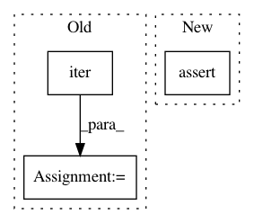

875b80d8e370bbc0c4b2af435710b6db4b8a2153,test/data/test_graph_saint.py,,test_graph_saint,#,7
Before Change
num_steps=4, sample_coverage=10,
log=False)
sample = next(iter(loader))
assert sample.x.tolist() == [[1, 1], [2, 2], [4, 4]]
assert sample.edge_index.tolist() == [[0, 1, 1, 2, 2], [0, 1, 2, 1, 2]]
assert sample.edge_type.tolist() == [6, 10, 11, 16, 17]
After Change
assert sample.num_nodes == sample.n_id.numel()
assert sample.x.tolist() == x[sample.n_id].tolist()
assert sample.edge_index.min() >= 0
assert sample.edge_index.max() < sample.num_nodes
assert sample.edge_id.min() >= 1 and sample.edge_id.max() <= 21
assert sample.edge_id.numel() == sample.num_edges
assert sample.node_norm.numel() == sample.num_nodes
assert sample.edge_norm.numel() == sample.num_edges
In pattern: SUPERPATTERN
Frequency: 4
Non-data size: 3
Instances
Project Name: rusty1s/pytorch_geometric
Commit Name: 875b80d8e370bbc0c4b2af435710b6db4b8a2153
Time: 2020-11-02
Author: matthias.fey@tu-dortmund.de
File Name: test/data/test_graph_saint.py
Class Name:
Method Name: test_graph_saint
Project Name: rusty1s/pytorch_geometric
Commit Name: 875b80d8e370bbc0c4b2af435710b6db4b8a2153
Time: 2020-11-02
Author: matthias.fey@tu-dortmund.de
File Name: test/data/test_cluster.py
Class Name:
Method Name: test_cluster_gcn
Project Name: facebookresearch/ParlAI
Commit Name: c228fc1c648602f93c078298f9e363f6e02694d2
Time: 2017-12-15
Author: ahm@fb.com
File Name: tests/test_threadutils.py
Class Name: TestSharedTable
Method Name: test_get_set_del
Project Name: pantsbuild/pants
Commit Name: 831b005905d3f3dd36269cccf9186d1ee1110858
Time: 2015-07-24
Author: john.sirois@gmail.com
File Name: src/python/pants/backend/python/interpreter_cache.py
Class Name: PythonInterpreterCache
Method Name: _resolve_and_link